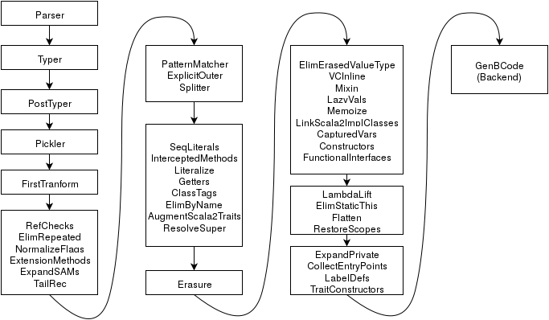
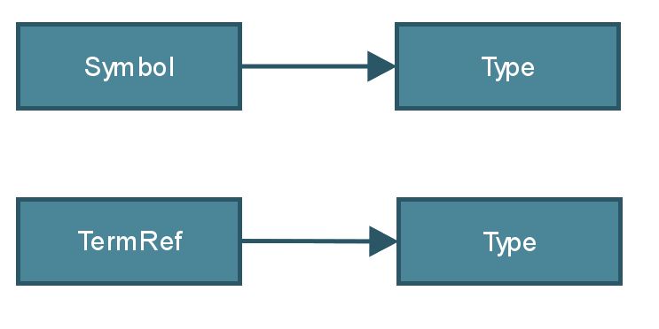
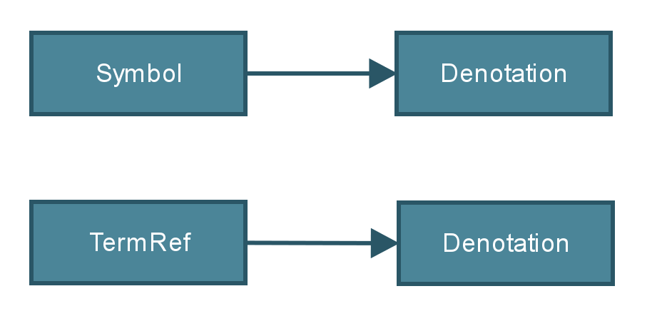

The architecture of Dotty
A next-generation Scala compiler
Guillaume Martres - EPFL
- These slides are two-dimensional, the left and right arrow keys will skip over vertical slides
- The space key will always go to the next slide
Note well
- To avoid overloading you with information, this presentation omits or present a simplified version of many things
- The goal is to get you to understand the concepts we used so that you may reuse them in a completely different project, rather than to turn you into an expert on Dotty itself
- See the other talks on Dotty if you're interested!
Dotty
- Started by Martin Odersky in 2013
- Bootstrapped (compiler can compile itself) in October 2015
- A new architecture
- Except for the backend (bytecode generator) which is mostly shared with Scala 2.12
- First goal: Simplify the internals of the type system
- Couple of years from being production-ready
Trees, Types and Symbols
- The compiler represents code using trees
- To ensure type-safety, we attach types to trees
- A tree might refer to an identifier defined in another tree or in the classpath, to each valid identifier corresponds a symbol looked up in the symbol table for the current scope, a symbol has a type
- Each phase of the compiler pipeline simplifies trees and types until they can be easily expressed using Java bytecode
- All of these data structures are immutable (or look immutable but use caching under the hood)
The compiler pipeline
Part 1: Frontend
Generating trees and typing them
Untyped Tree
obj.fun(5)
obj.fun(5)
Apply(Select(Ident("obj"), "fun"), Literal(5))
Typed tree, first attempt
class A {
def fun(x: Int): Int = x
}
val obj: A = new A
obj.fun(5)
Typed tree, first attempt fails
class A[T] {
def fun(x: T): T = x
}
val obj: A[Int] = new A[Int]
obj.fun(5)
References to types
- Symbols do not capture enough information
- in an OO language with a rich type system, the prefix used to access an identifier matters
- Let us introduce a special kind of type which refers to another type:
class TermRef(prefix: Type, name: String) extends Type - obj.fun gets type TermRef(x, "fun") which refers to the type Int => Int
The story so far
Denotation: linked list of lazily computed types

More accurate picture
Part 2: Middle-End
Simplifing types and trees with successive transformations
Common pattern for transforming trees
override def transform(tree: Tree): Tree = {
// call "transform" on every node that tree points to
val tree1 = transformChildren(tree)
tree1 match {
case tree: Apply =>
// make a new tree and return it
...
case tree: Select =>
// make a new tree and return it
...
case tree => // default case
tree1
}
}
Simplified API for common case
// Precondition of each transformX method: children nodes
// are already transformed by this phase
override def transformApply(tree: Apply): Tree = {
// make a new tree and return it
...
}
override def transformSelect(tree: Select): Tree = {
// make a new tree and return it
...
}
// No need to override transformX if we do not need to
// transform them
Traditional phase design
1 phase = 1 full traversal
Mini-phase design
N fused mini-phases = 1 full traversal
References
- Code: github.com/lampepfl/dotty
- Other talks on Dotty on the GitHub Wiki